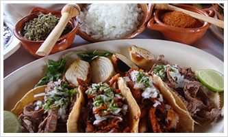
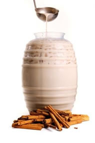
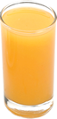

TaquitoMX
Comidas

TACOS
- De pastor
- De pastor c/queso
- De bisteck
- De guisado (sobre 2 Tortillas con Arroz o Frijoles Refritos):
- Chicharrón en Salsa Verde
- Papas con Chorizo
- Rajas con crema
- Cochinita Pibil
- Pollo con Mole
ESPECIALIDADES
- Las cazuelas (Incluyen:tortillas de maiz, salsa y limones)
- DOÑA CAZUELA: Arrachera, Chorizo y Pastor, acompañadas de Cebollitas al Carbón y una Quesadilla en su cazuela individual o una Cazuelita de Queso si su cazuela es para 2 personas o más
- LA CONSENTIDA: Chuleta, alambre de Pastor y Chorizo acompañadas de Cebollitas al Carbón y una Quesadilla en su cazuela individual o una Cazuelita de Queso si su cazuela es para 2 personas o más
- LA TRADICIONAL DE PASTOR
- MOLCAJETES:¡PARA DARSE GUSTO… O AL CENTRO!
Para 2 personas con Tiras de Nopal, Queso Fresco y Cebollitas Cambray Asadas, servidas con nuestra Salsa TaquitoMX
- TaquitoMX: De Bistec, Chuleta y Chorizo
- ESPECIAL: De Pollo, Arrachera y Chorizo
- ARRACHERA A LA PARRILLA: Con chorizo, Queso fresco y Guacamole
- PLATÓN DE ANTOJO: 2 Tacos de Bistec, 2 Tacos de Chorizo y 1 Cazuelita de Queso Fundido
BEBIDAS:
- JARRAS DE AGUA: Jamaica y Horchata

- AGUAS FRESCAS: Jamaica, Horchata, Del día
- REFRESCOS: Coca-Cola, Coca-cero, Pepsi, Pepsi Light, 7Up, Sangría, Mirinda, Squirt, Manzanita Sol
- JUGO DE NARANJA

- NARANJADA
- LIMONADA
- CERVEZAS
- MICHELADAS
POSTRES:
- FLAN NAPOLITANO
- PASTEL DE CHOCOLATE
- HELADO: Chocolate y vainilla